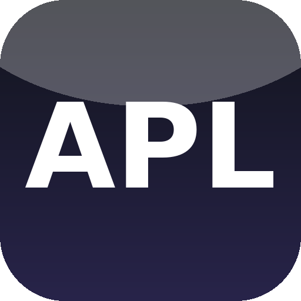
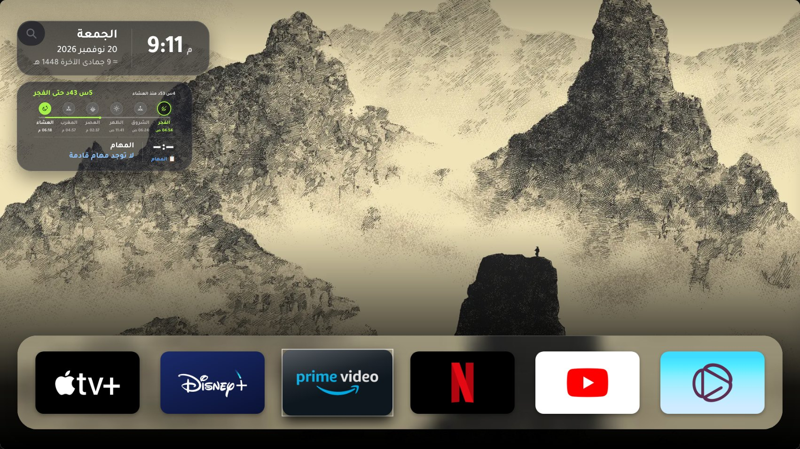
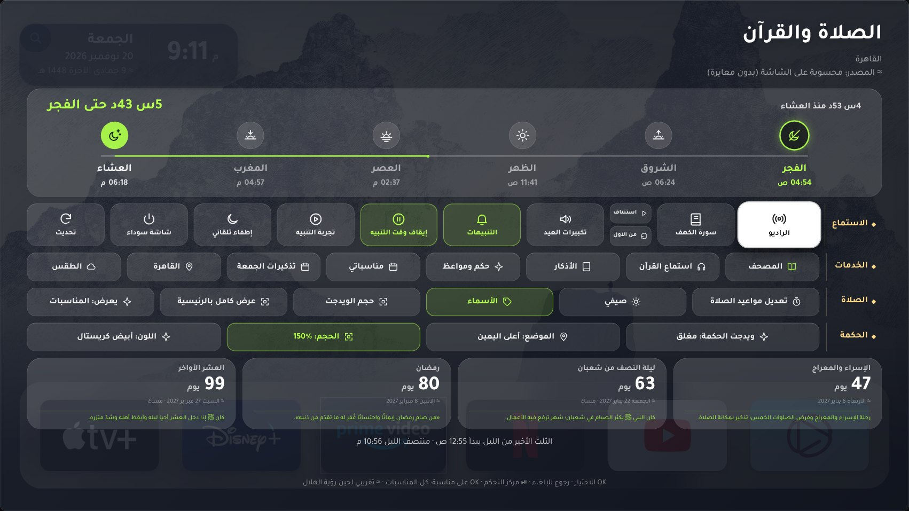
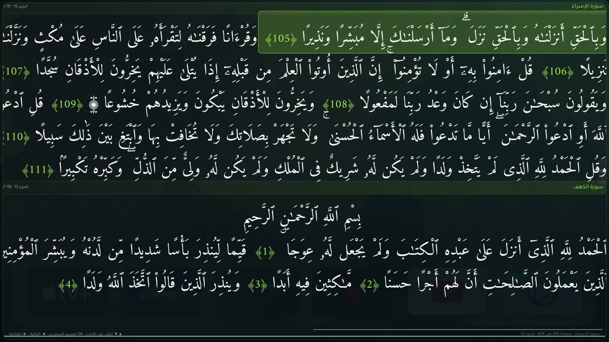
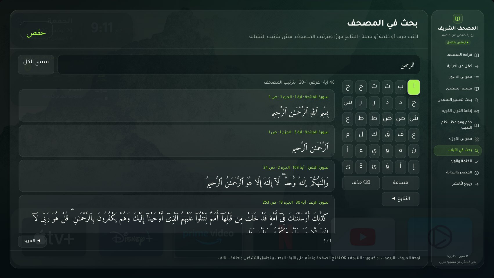
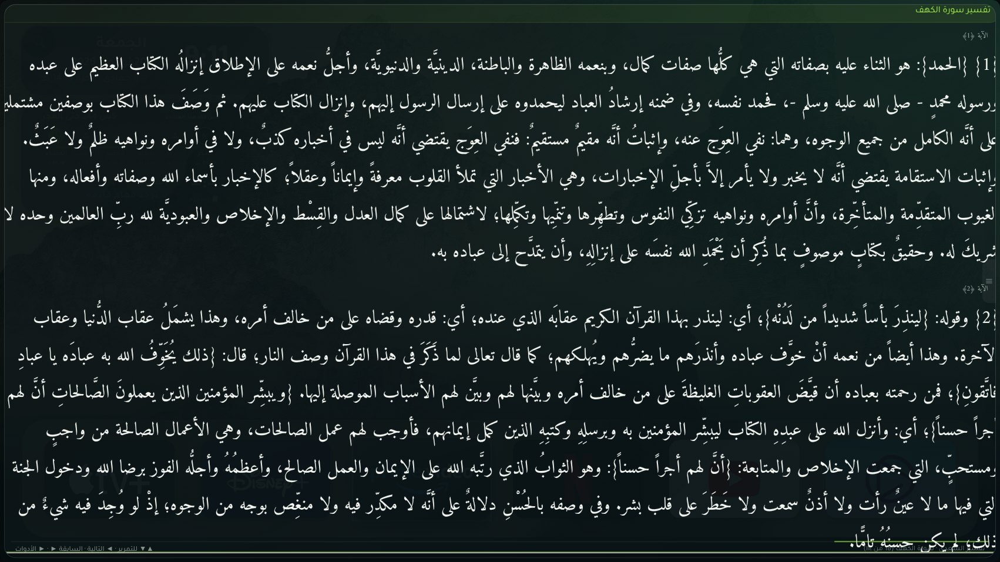
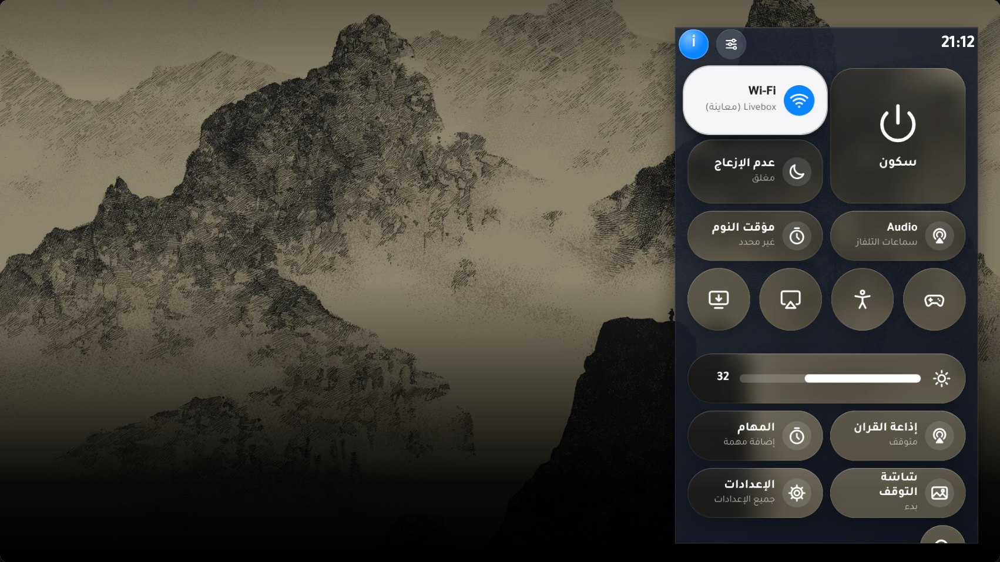
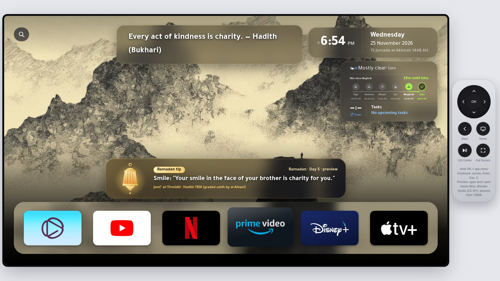

مشغّل بشكل Apple TV لشاشات سامسونج: مواقيت الصلاة، مصحف كامل بالتشكيل بدون إنترنت، تفسير السعدي، إذاعة القرآن، وأذكار. مجاني ومفتوح المصدر.
An Apple TV-style launcher for Samsung Tizen TVs: prayer times, a full offline Mushaf with tashkeel, Tafsir al-Sa'di, Quran radio and azkar. Free and open source.
تحميل آخر نسخةDownload latest version تثبيت بضغطة (Apps2Samsung)One-click install (Apps2Samsung) طريقة التثبيتHow to install
بتتحسب على التلفزيون نفسه فتشتغل بدون إنترنت، مع عدّاد للصلاة القادمة وتنبيهات صوتية.
Calculated on the TV itself, so they work offline. Live countdown to the next prayer and spoken alerts.
رواية حفص بالتشكيل، فهرس السور والأجزاء، وبحث فوري بلوحة مفاتيح عربية للريموت.
Hafs text with tashkeel, surah and juz' indexes, instant search with an on-screen Arabic keyboard.
تفسير السعدي، إذاعة القرآن الكريم من القاهرة، سورة الكهف بضغطة، أذكار وختمة.
Tafsir al-Sa'di, Quran radio from Cairo, Al-Kahf in one press, azkar and a khatma tracker.
تطبيقاتك، مركز تحكم، مصادر HDMI، ملفات شخصية بقفل أطفال، طقس ومهام. عربي من اليمين لليسار.
Your apps, Control Center, HDMI sources, kid-lock profiles, weather and tasks. Arabic-first RTL interface.






يشتغل على شاشات سامسونج موديل 2022 أو أحدث (Tizen 6.5 فأحدث).
Works on Samsung Smart TVs from 2022 or newer (Tizen 6.5+).
12345 وفعّل Developer mode، اكتب عنوان IP بتاع الكمبيوتر، وأعد تشغيل التلفزيون..wgt من صفحة الإصدارات.12345, turn Developer mode on, enter your computer's IP address, then restart the TV..wgt file from the Releases page..wgt and press Install.أسرع طريقة: صفحة التثبيت على Apps2SamsungFastest route: Apps2Samsung install page